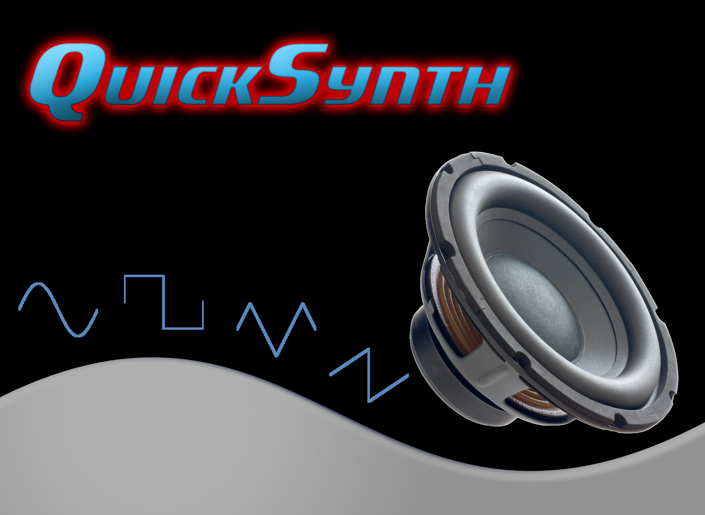
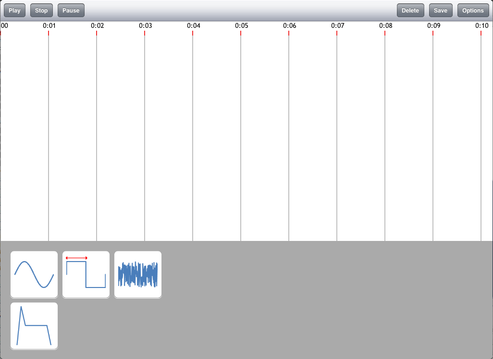
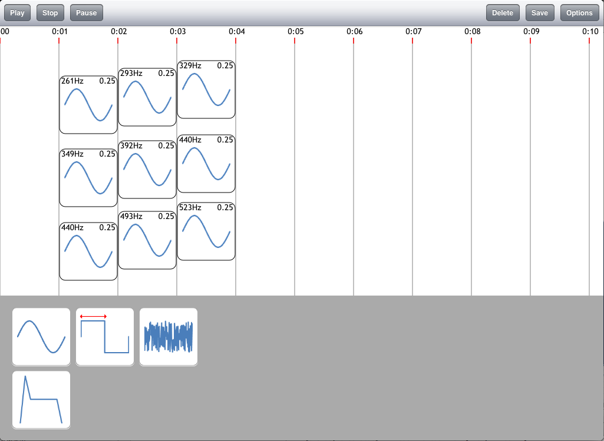
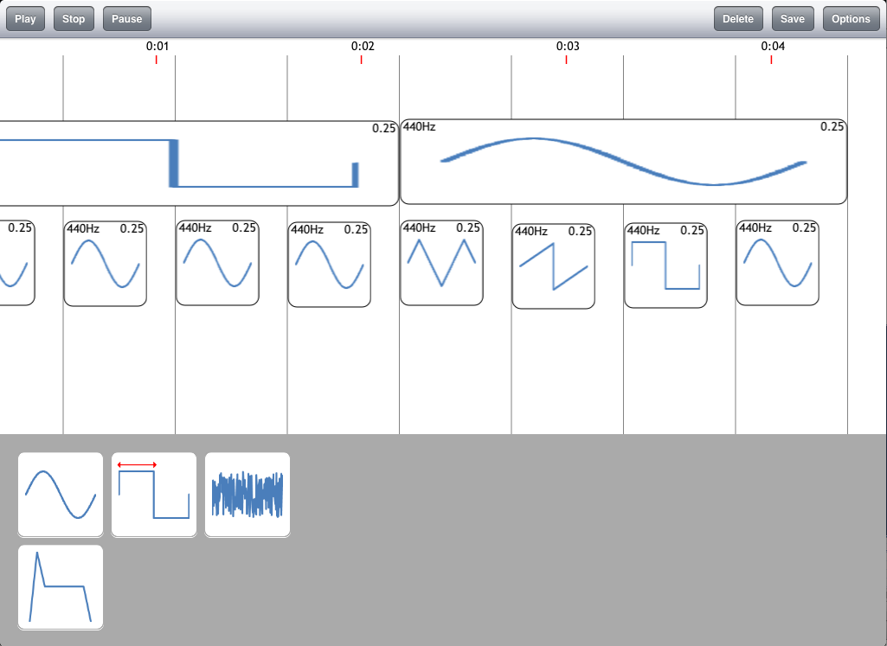

Sound generation is made easy. All you need to do is just drag a sound module onto the score. Now you can immediately hear the sound played. No complicated menu settings for timing.
There are a wide variety of different sound generators to choose from. Choose from many different waveform types or noise. Need a waveform that isn't built in, simply stack different sound generators to build it up.
Does that sound generator sound uniform and bland? Slap a modifier on it. Choose from envelopes, dynamic filters, vibrato and more. One modifier not enough? Just stack them up.
Unlike other synthesis environments, QuickSynth lets you time your elements visually. Instead of setting the start and stop times of sounds in some menu, simply place them on the score when you want them and adjust their size to be as long as you want.
Simplify your synthesis experience even further. Once you have a sound just the way you want it, save it. Then you can place that same sound directly from the toolbox just like any other sound.
|  |  |
|  |  |
Andrew Pellegrini @apelle03